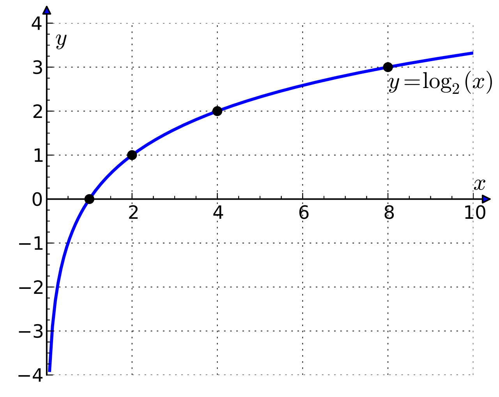

市場與資訊篇：預測市場與賽馬下注

所謂的「預測市場」包含股票市場、運動賭盤等等，特點是整合了民眾的想法，並反映在價格/賠率上。從股票的高低可以看出民眾對該公司的預測；從運動隊伍的賠率可以看出人們對他們的信心。
賽馬賭注
設共有 $w$ 的賭金。
假設這個賭博有二分之一的機會賭中，賭成功得到兩倍賭金，那麼期望值是：
$0.5\times (2w) + 0.5(0) = w$
看起來有賭跟沒賭是一樣的，但在現實中你可能不會覺得一樣。可能風險承擔能力和邊際效應會有所影響。請問對你來說，賺 2000 萬跟賺 1000 萬的快樂程度比是兩倍嗎？所以這裡的「金額」離我們主觀的「滿足程度」還有一段距離。所以在此加入一個 utitlity funciton，設為 $U$。上一段的式子也可以想成是用 $U(w) = w$ 的轉換函式。
人一般隨收入增加會有效益遞減的現象，金額大到一定程度，快樂的程度就會變得增加很慢。我們接下來使用對數函數作為 $U$，以達到這個效果。

下注時如何分配金額？
假設
- 賽馬下注時有兩個參賽隊伍可以選擇：A 和 B。
- a 和 1-a 是你分別覺得 A 和 B 的勝率。
- 你共有 $w$ 元。
- 賠率分別為 $o_A$ 和 $o_B$。
- 你打算把你的錢的 $r$ 比例投注在 A，剩下的投在 B 上面。
- $U$ 是你的效用轉換函式，採用 $\ln$。
你覺得的期望值為：
$aU(rwo_A)+(1-a)U(rwo_B)\ \Rightarrow a\ln{(rwo_A)}+(1-a)\ln{((1-r)wo_B)}\ \Rightarrow a\ln(r)+(1-a)\ln(1-r)+a\ln(wo_A)+(1-a)\ln((1-r)wo_B)$
很特別的是，第三項和第四項不是你可以控制的，你能控制的只有 $r$（你的投注也有可能影響賠率，但在這裡不考慮這種狀況）。
你能控制的只有：$a\ln(r)+(1-a)\ln(1-r)$
對 $r$ 微分，會得到：$\frac{a}{r}-\frac{1-a}{1-r}$
讓微分等於零求極值 $\Rightarrow r = a$
結論
如果你自己對錢的快樂轉換函式是 log，那下注時按就照你的信念！ 分配錢在不同注的比例就按照你覺得哪一隊的勝率多少。
圖片來源
Log 圖：By Krishnavedala - Own work, CC BY-SA 3.0, https://commons.wikimedia.org/w/index.php?curid=15408195